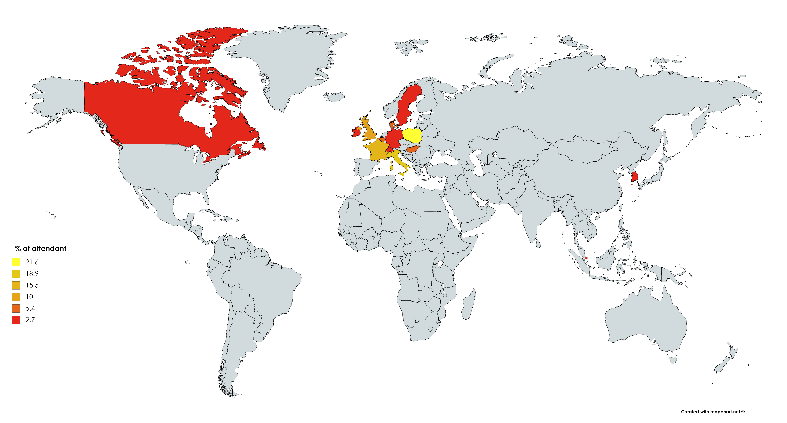

|
|
|
WELCOME TO THE BIENNIAL EDINBURGH SPM COURSE WEBSITE!
This course runs every 2 years and offers a comprehensive theoretical and practical coverage of all functional MRI-related aspects of SPM. Day 1 is for absolute beginners with no or little previous exposure to MRI or Matlab. In the morning, there is an overview of MRI, BOLD and fMRI designs (assumes you are a little familiar with what is fMRI). In the afternoon, we cover basic usage of Maltab (from scratch). Day 2 and 3 are for SPM beginners with little or no SPM experience, covering all the steps for mass-univariate statistical analysis (from spatial pre-processing to statistical analysis with the General Linear Model and data visualization). Day 4 and 5 are for SPM/fMRI advanced users. While some topics relates directly to SPM, most courses use SPM in combination with toolboxes. -- All parts of the course can be booked separately or as a whole If you are a true beginner, we recommend to stick to day 1, 2 and 3 as you will not benefit from practicals on days 4 and 5.
SPM 2019 IS OVER - SEE YOU IN 2021! ALL LECTURES AREE ONLINE
PARTICULAR FEATURES OF THIS COURSE
•A one day course for absolute beginners(learn fundamentals and also Matlab® basics) - this can be booked separately •Theoretical lectures and practicalsc with user-driven sessions at the computer for the beginners (one computer per person is available - with a total of 6 to 7 hours practical). Advanced users work in small groups to interact with a tutor for a demonstration (take your laptop). •Practicalities for neuroimaging reproducibility - Brain Imaging Data Structure, NeuroImaging Data Model, NeuroVault • Edinburgh Specific Advanced workshops • all presentations are generously timed, allowing for plenty of questions and in-depth discussions 2019 Faculty included John Ashburner (London, UK), Ian Charest (Birmingham, UK), Roselyn Chauvin (Nijmegen, NL), Daniele Marinazzo & Sofie Van Den Bossche (Gent, Belgium), Martyn Mcfarquhar (Mancherste, UK), Alexa Morcom (Sussex, UK), Cyril Pernet (Edinburgh, UK), Christophe Phillips (Liege, Belgium),
The Edinburgh course 2019 was attended by 37 students, of which 8 from Poland, 7 from Italy, 5 from France, 4 from UK, 2 from Belgium, 2 from Denmark, 2 from Hungary, 1 from Ireland, 1 from Korea, 1 from Germany,1 from Singapore,1 from Canada, 1 from Sweden, 1 from Switzerland Thanks to all for coming ! 
Student ratings are in! Absolute beginners course ~4/5 (Physics and BOLD 4.2, Designs 3.9, Practical matlab introduction 4.1) Beginners course ~3.8/5 (Preprocessing 3.64, Stats 4, Practical 3.9) Advanced users ~3.8/5 (Functional connectivity overview 3.64, Effective connectivity: DCM 3.5, Inferential brain mapping 3.64, Multivariate GLM 4.14, Pattern Classification 3.71, Representational Similarity Analyses 4.43, Workshops avg 3.8)
|